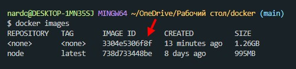
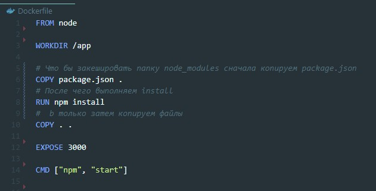
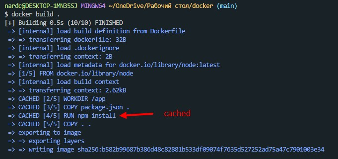

Предполагается, что мы создали обыкновенное React приложение с помощью create-react-app.
Первое что нам нужно сделать - это в корне приложения создать файл с именем Dockerfile. Обращаем внимание, что у этого файла нет никакого расширения. В этом файле мы будем описывать определенные инструкции для создания нашего образа (не контейнера, а именно образа).
После того как мы описали все инструкции, нам необходимо запустить сборку ообраза. Делается это с помощью команды
docker build .Точка означает что мы собираем образ из текущей директории, т.е. оттуда где лежит Dockerfile.
Для начала посмотрим список образов, для того что бы получить ID образа
docker images После этого запускаем образ с помощью команды run
docker run -p 3000:3000 3304e5306f8f-p 3000:3000 - говорит о том, что мы запускаем докер на 3000 порту, а слушаем у контейнера порт 3000 (второй)
3304e5306f8f - это id образа
При каждом билде образа, нам приходится очень долго ждать, пока установятся зависимости. Что бы этого избежать мы можем закешировать node_modules
Таким образом, если Dockerfile не будет изменен, данные на этапах создания образа будут браться из кеша docker-a
